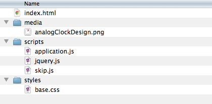

Some more basics
We’re moving right along in our exploration of JavaScript.
Last week’s “JavaScript basics” focussed on the most common variable types as well as type coercion.
Before we dig deeper into the language it’s worth looking at a few more nuts and bolts of working in-browser with JavaScript.
Now that we know a little about objects I can show you the one big global (or “root”) object that houses everything.
Type window into your console like this:
window
► Window
In your console click the triangle next to the Window response
and you’ll see all of the variables that are visible from the global scope.
There’s a lot in there. And your scripts have access to all of it.
(Later in the course we’ll discuss name-spacing to keep things tidy and to prevent overwriting important variables.)
Inspecting variables
As you’re writing more complex scripts you’ll inevitably run across bugs—particularly
if you go with the “cowboy style” of constant trial, error, and iteration.
Here are three quick ways to inspect the value of variables that might be misbehaving.
The first is to output to the console using the
console object and its
log method:
var luckyNumber = 7
undefined
console.log( 'My luckyNumber is '+ luckyNumber )
My luckyNumber is 7
undefined
The second way to get quick outputs is a bit more brash.
The alert method will pop up a dialog box,
preventing you from interacting with the page until you click the “Ok” button.
Warning: Do not put an alert in a long or infinite loop.
You will regret it.
var luckyNumber = 7
undefined
alert( 'My luckyNumber is '+ luckyNumber )
undefined
The third way is more subtle.
Just as the browser’s window is represented by a window object,
the HTML document running inside this window is represented by a document object.
You can change its title property and thereby change what’s in the browser’s title bar.
var luckyNumber = 7
undefined
document.title = 'My luckyNumber is '+ luckyNumber
"My luckyNumber is 7"
Now, bonus points for whomever inspects the document
object in the console and is confused by the console’s response.
Where’s the title property?
(Let’s discuss this for a few minutes.)
Style and comments
As part of the homework assigned last week you read the short essay Semicolons are Optional and also browsed the Kahn Academy JavaScript Styleguide. What’s your personal coding style guide? Is your source code neat or messy? How confident are you that a colleague could look through your source and make sense of it? Sure, these things are highly subjective and therefore there are no truly correct answers. But as always, bear in mind that programs should be written for people to read, and only incidentally for machines to execute.
Part of maintaining good source code is commenting. Comments in JavaScript are the same as in Java or most C-derived languages. There are single line comments that begin with a double-forward-slash and extend to the end of the line:
var x = 0// And this side text won’t get executed.
And there are multiline comments that begin with slash-star and end with a star-slash like so:
/*
Multiline comments
are best for temporarily
striking out blocks of code.
*/
Running off the desktop
Your browser can run a static (no moving parts) website right off your desktop. No web server, domain name, or anything like that is required. After all, a simple static website really is just some text files and maybe a few bits of media like images or video if you want to get all fancy about it.
Here’s a lightweight template for you to download which includes some HTML, CSS, and JavaScript to get you started:
webTemplate.zip
Open it up and you’ll see a very simple folder structure for organizing your files.
Within the scripts folder you’ll find two libraries
(jQuery and
Skip)
as well as an application.js file.
This application.js is where you’ll want to write your code.
To see the results just drop the index.html file into your browser.

After editing your source files just hit your browser’s refresh button to see the results. If you run into cache problems (the files have been updated but the browser continues to render the old version) either hit refresh again or empty your browser’s cache entirely.
Don’t be afraid of constant trial, error, and iteration. Making rapid little edits and repeatedly refreshing the browser is a good working method. Instead of trying to design a whole architecture first and then attempt to construct it second, this rapid-edit style is more like intuitively mashing and pulling on a block of clay until the desired shape emerges.